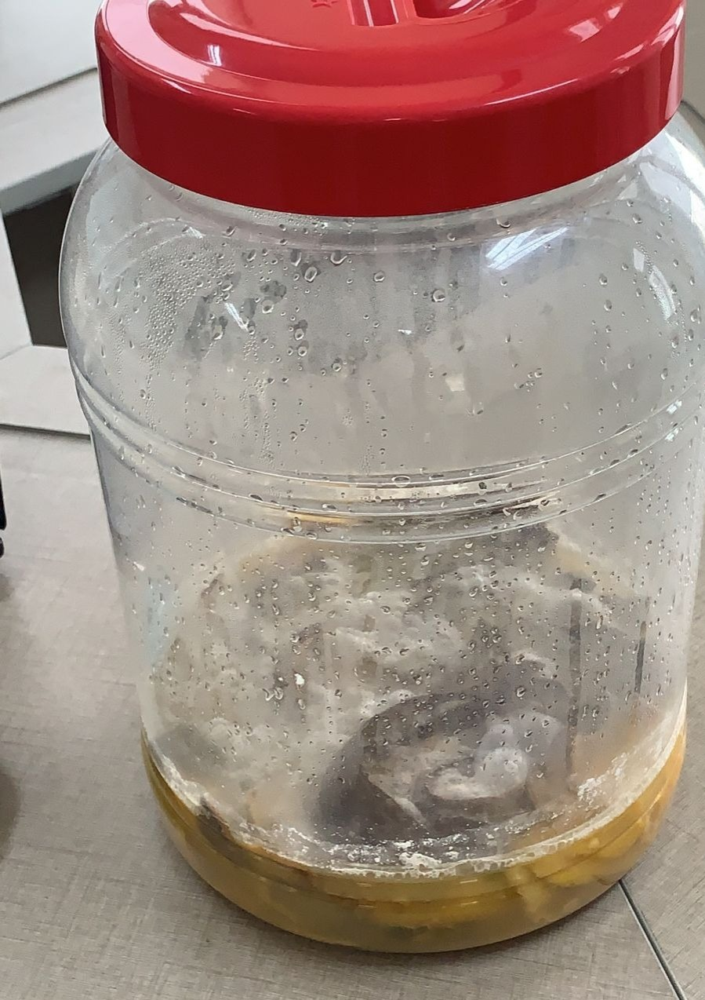
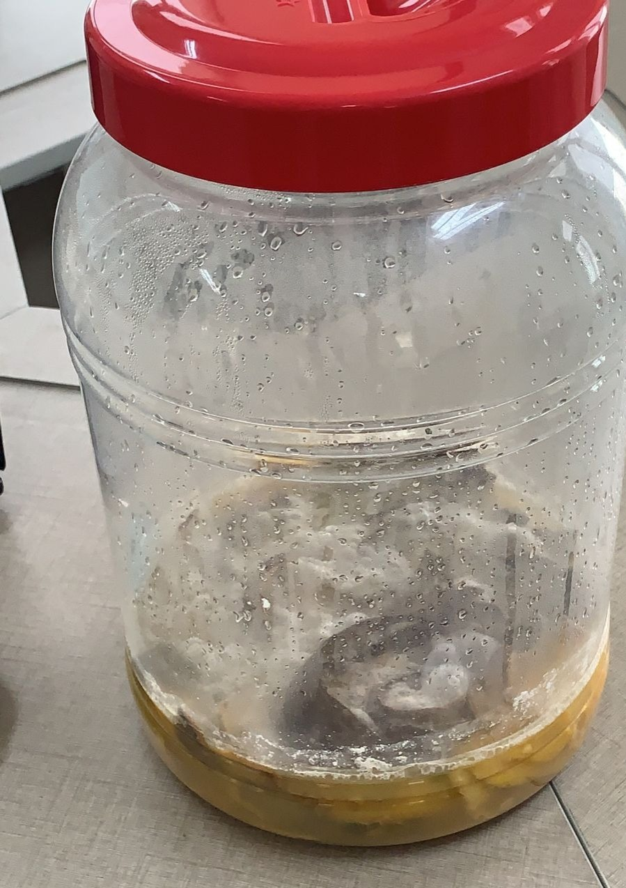
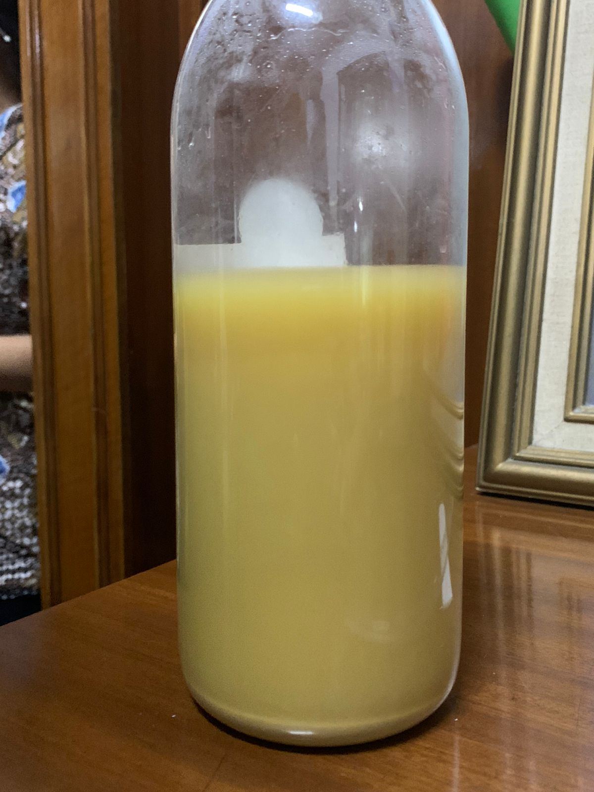
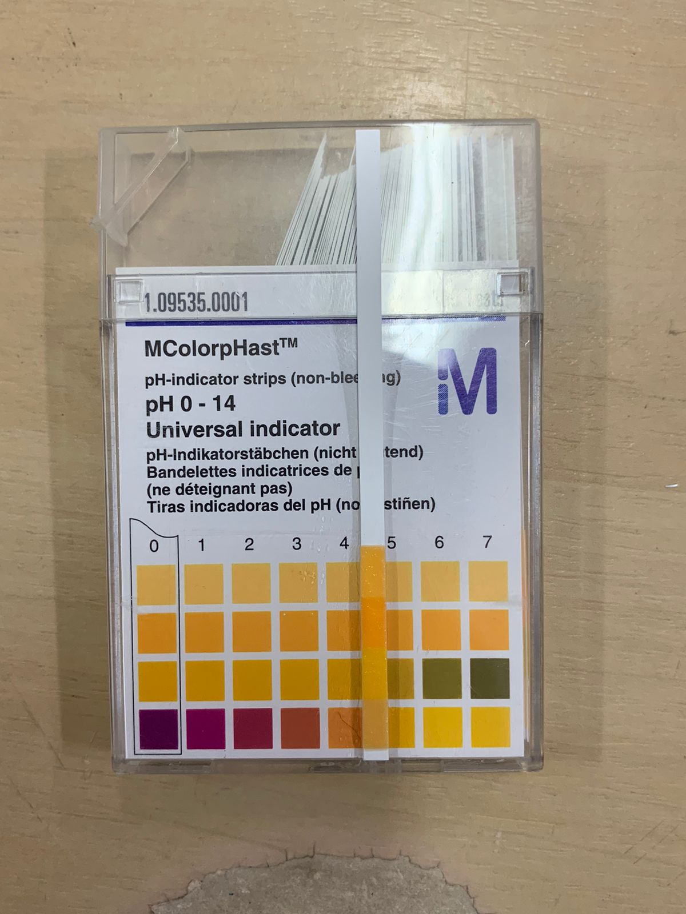

Aroma: gula aren dan sekilas bau jeruk
Warna: coklat transparan

Aroma: segar buah jeruk
Warna: kuning transparan

Aroma: beraroma alkohol dan jeruk
Warna: kuning kecoklatan keruh
| Proses | Analisis Penelitian |
|---|---|
| Hari Pembuatan |
Kondisi Fisik: Kulit buah mengapung diatas cairan. Aroma: gula aren dan sekilas bau jeruk Warna: coklat transparan |
| Minggu Kedua  |
Kondisi Fisik: berjamur putih, berembun, beberapa kulit buah mulai layu Aroma: segar buah jeruk Warna: kuning transparan |
| Bulan Ke-4 |
Kondisi Fisik: kulit buah menyusut dan bertekstur lembek, jamur putih menghilang dan kulit buah tenggelam dalam cairan. Setelah eco-enzyme disaring, cairannya mengendap. Aroma: beraroma alkohol dan jeruk Warna: kuning kecoklatan keruh |

| Warna | Aroma | Kandungan |
|---|---|---|
| Coklat keruh | Buah jeruk beralkohol | O3, NO3, CO3 dan Asam Asetat |
